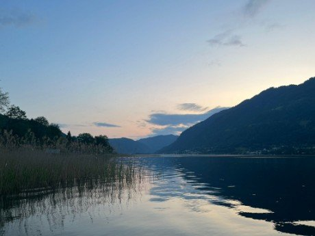

Campingplätze, Gasthöfe und Ferienunterkünfte rund um das Sportzentrum Landskron.
Wichtig für Gäste mit Hund:Bitte bei der Buchung immer Anzahl und Größe der Hunde angeben. Regeln, Zusatzkosten und Verfügbarkeit direkt bei der Unterkunft bestätigen.
Camping
Campingplätze
Diese Auswahl stammt aus der bisherigen Veranstaltungsseite. Aktuelle Hunderegeln, Entfernungen, Preise und Verfügbarkeit bitte direkt beim Betrieb bestätigen.

Camping
Seecamping Plörz
Familiärer Campingplatz direkt am See; die bisherige Veranstaltungsseite nennt direkten Seezugang und eine kurze Anfahrt zum Veranstaltungsort.
Hinweis:Die Nennung ist keine Buchungsempfehlung. Verfügbarkeit, Preise, Entfernung und Hundefreundlichkeit müssen direkt beim Betrieb bestätigt werden.